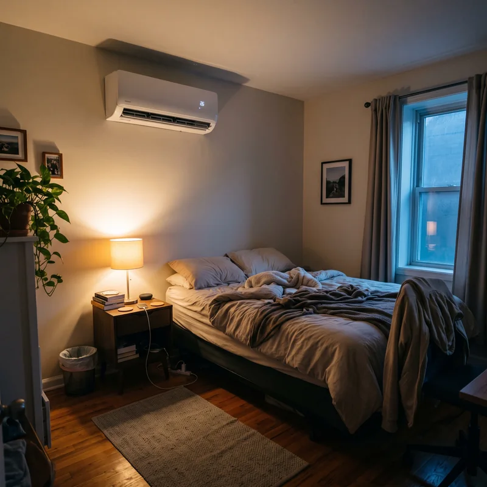
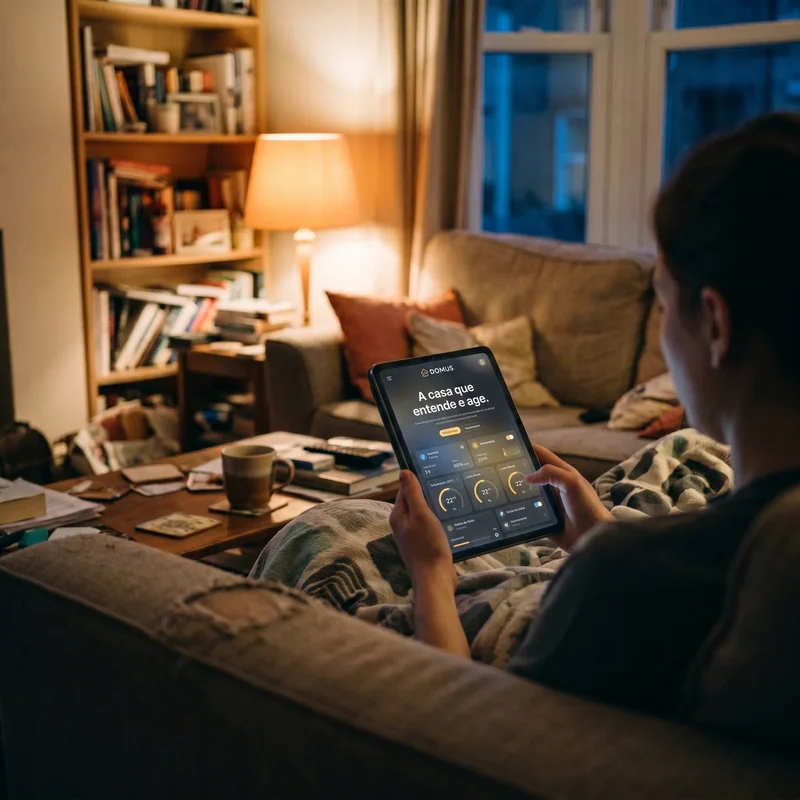

Energia
Consumo em tempo real, horários de pico e o gasto de cada aparelho.
Plataforma
O DOMUS AI é uma plataforma de inteligência residencial. Ele reúne os dados da casa, entende o funcionamento dela e ajuda o morador a decidir melhor no dia a dia.
01 · O que o DOMUS lê
Consumo em tempo real, horários de pico e o gasto de cada aparelho.
Litros por hora, consumo diário e sinais de vazamento.
Quais cômodos estão ocupados e em que horários.
O que está ligado, por quanto tempo e com que frequência.
Portas e janelas abertas e eventos fora do horário.
02 · Como a informação circula
Mede água, energia, presença, temperatura e o estado dos equipamentos, e envia as leituras para o DOMUS.
Cruza as leituras, identifica padrões e anomalias, avisa você no app e prepara a ação certa.
É o equipamento que muda algo no mundo físico: fecha a água, apaga uma luz, desliga uma tomada.
03 · O que a inteligência faz
Aprende a rotina da casa: que horas todos acordam, quando a casa esvazia, quanto se gasta num dia normal.
“Em dias úteis, a casa fica vazia das 8h às 18h.”Percebe o que foge do normal e avisa na hora, antes do problema crescer.
“Consumo de água 700% acima do normal no banheiro.”Usa o histórico para antecipar o consumo e os horários de pico.
“Mantido o padrão, o mês fecha em 212 kWh.”Transforma tudo isso em sugestões práticas, que o morador aprova com um toque.
“Desligar o ar quando o quarto esvaziar?”Na prática


Você no controle
O DOMUS avisa no celular e espera você tocar em “Fechar registro” ou “Desligar luz”.
Nas situações que você já autorizou, o DOMUS age sozinho e só avisa o que foi feito.